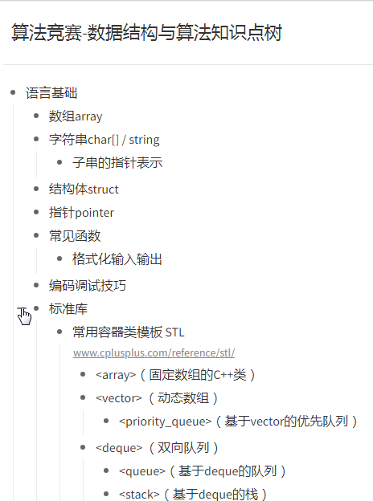
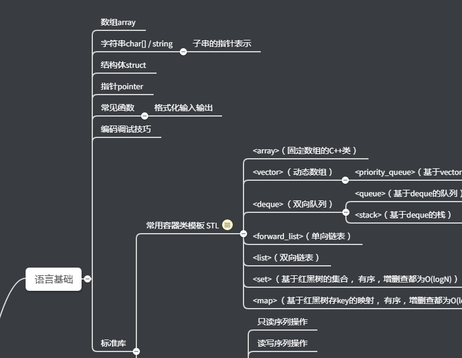

从小到大，我在身边人眼里，大概算 能说会写。作文偶有评优，被当做范文；初中到大学一直当学生干部，大学打辩论；工作后每次培训都拿优秀，再到当企业内训讲师，和后面带技术团队。同学和同事，对我的表达能力评价不低。
可这样的我，经常憋不出文章。
忠实记录
我知道自己在书面表达上不得要领。不擅修辞，行文口癖频现，不够准确精炼；内容组织上，也全凭运气。
我所一直依仗的，仅仅是忠实记录而已。刚好对一个主题有自己观点，落笔顺理成章，还显真诚——那本来就是真实想法；可如果没想法，或者命题方向不是真实观点，就很痛苦，拧巴地挤牙膏。实际上，上高中以后我作文发挥就非常不稳定，对命题议论文尤其抵触。
还好选的理工科，好赖把书念完，找了个工程师的工作，平时除了代码，再写写文档，写作的问题好像也没那么重要。
偶尔做培训准备材料，做技术介绍，写学习笔记，内容专业性强，有明确对错和优劣，带入的个人观点依据也非常清晰。这些课纲和文章，成文有一些口癖，大致上是通顺易懂的。这走的还是忠实记录路线，没了高考作文的压力，觉得这样也没什么不对。
困境
可我不光写技术，也不能光写技术。
『宝藏男孩』、『行走的百科全书』….. 恭维话听多了，心里清楚大家过誉了，还是会窃喜，觉得可以总结一些经验想法和大家分享。另一方面，希望以输出带动思考和学习，让自己进步。就有了博客和公众号的记录，当下姑且叫做『存档计划』，开始增加非技术的内容。
写着写着，老问题还在，不能说彻底写不出，但输出效率显然太低，之前绕开的石头，再次挡在路上。
以前只是没想法或者观点冲突时卡壳，现在哪怕写亲身的体会，明明洗澡、躺床上、排队时想得好好的，等坐下面对键盘或纸笔，就写不出来了。同样的内容，有人来问，不管是面对面、语音、还是 打字，能很流畅讲给对方听；换做写成文章分享给更多人，又卡了。感觉自己是 装饺子的茶壶 ，非常难受。
继续写技术科普，很顺畅，不缺技术主题，可以一直写下去。但这样写技术类的成就感，会掩盖掉非技术类存在的问题。最近要求自己每写几篇技术文章，中间来一篇非技术内容，如果写不出，技术内容也跟着暂停。要直面这个问题。
技术原因
这个技术不是 Technology 的意思，而是 Cause in Technique，也就是战术操作上的原因。
这些年断断续续在思考，和尝试不同的工具。但一天不整理输出，思考始终还处于混沌的状态。现在逼着自己整理这个话题，变成了一个 元叙述。亦即，整理的内容本身，就是关于整理的过程；整理过程本身，恰恰就是对整理成果的 尝试 和 验证。这是一个痛苦并有趣的过程：
|
|

1. 口头和文本的差异
能聊不能写，是因为口头交流和文本，是两套体系。即时通讯虽然打字，内容节奏仍然是口头交流。
交流有明确 上下文 ，参与者都知晓，无需赘述。
一旦面向更多读者，背景突然需要解释，三言两语未必解释得清。
交流有 时效性 。
随着对话的推进，你不会也不可能太在意发言的严谨性；不会每说一句话都斟词酌句，大家在等着；也不会动不动挑别人话里的刺，除非影响理解了。随着对话推进，错误要么被忽略，要么被补充。
一旦落实成公开文本，到处是漏洞，（我怕）在缺乏上下文的语境里，会被读者误解和放大。
交流有 实时反馈 。
参与者的理解程度和评价，都是实时响应。不解和负面评价，可以马上做出反应；正面反馈，则给了继续交流的信心。单向文本输出失去了这些，作者只能想象读者的接受度。强迫症如我，陷入说不清和太罗嗦的两难。
把一个还算满意的交流过程录音，原样转成文本，尝试直接发表，就会发现两者之间的鸿沟。
2. 想法稍纵即逝
一个想法的诞生，除了对问题持续的实践与思考，还需要松弛的精神状态，和特定情景触发。那么这个短时记忆，产生时的状态、触发的情景没有了，离开最初的时间地点越远，面容越模糊。
记录不方便，或者自信『这么印象深刻的想法一定不会忘』，那么大概率到有空整理时，已经丢失了大量的细节。偏偏某些细节才是关键，一旦忘记，余下部分就重归混沌与平庸。
更糟糕的是一下子冒出多个想法，互相干扰，大大缩短遗忘时间。
3. 思维与文本的差异
思维的特点，和文本记录，差别很大。
大脑思考和记忆，是通过一系列离散信息的关联来完成的。对某个复杂的主题，大脑不像硬盘，并没有一个地方储存着这个主题的文本，一字一字线性地读或者写。而是大量零散信息，储存在不同神经元的关联里；这些信息的进一步兴奋关联，构成了更复杂的主题，以此类推。它是金字塔或者说树的结构——考虑到存在跨子树和叶子的关联，有环，其实是网状结构。
大脑思考时，会尝试调取已有的记忆，去解释、解决当前问题。就好像在 拼拼图或者立体模型 ，去翻找用得上的零件（想象大量的、好多套零件混在一起，不是每个都用得上，需要的也不一定都有）。思维的跳跃因人而异，不同人的知识结构差异很大（怎么找，依赖零件怎么放，平时有没有整理）。
如果严格按照拼图从左上到右下的刻板顺序，只能盯着当前拼接位置，一块块试，接得上留下，接不上丢回去。海量候选零件，等于在蒙，全凭运气。这就是文本线性记录的特点：在没想好的地方卡住，先想到的却暂时找不到安置之处 。碰到『易碎』零件，没用上丢回去，碎了，下次要用也找不到了。
思维本身不受顺序限制，要有一个框架，把思维丢过来的有用零件，都先接住。
改善办法
能清楚界定问题，对症下药改善，反而简单。
1. 找一个倾诉对象
找一个听众。能懂相关话题，积极反馈，很好。
对方不懂，愿意听，也很好（参考费曼技巧）。
一时找不到人，一个玩偶，或任意拟人的东西，对着它说，提供的心理暗示也很有用（参考小黄鸭调试法）。
重要的，是有人倾听的交流感。一个人时，可以想象一个目标听众，（当作）录音给 TA 听，来增强感觉。
2. 实时记录
实时捕获想法，不要相信当时『茅塞顿开』或『印象深刻』的感觉。
这句话的意思是，不要相信以后会记得，要马上记录；也不要高估这个想法起的作用，需要长时间坚持记录，才有可能从大量想法里，筛选出一些有用的。记录时尽量不要前置甄别，幼稚的念头也有启发意义，而且删除很容易；等发现那个想法确实很关键，可能就想不起来了。
随时记录包括两个方面：
a) 用工具降低记录成本
纸笔党可以随身携带小型记事本和笔，参考类似 Moleskine 的绑带记事本，绑一支笔。要不要 Moleskine
这个意大利牌子，见仁见智。个人觉得不必要，洇墨的无酸纸对不起招牌和价格。
再学习一些视觉笔记的符号，了解一点思维导图，尽量做到快速勾勒想法，而不是一字一句抠字眼。
不拘泥于纸笔，或者像我这样写字画画手残的，要感谢智能手机，提供了很多方便的工具：
录音
适合特别复杂又稍纵即逝的想法，快速而忠实地记录。
缺点是，录得多了整理麻烦，一般的内容没有动力整理就堆积了。能找到带识别的录音就更好了，可以作为整理时的参考。
记事本 + 语音输入法
如果不录音，以输入法识别结果作为唯一记录，语音识别的正确率一定要高。谁都不想说了一堆话之后，还要对着识别结果一个一个修改错误。适合篇幅长的内容，避免后续人工转换成文本的负担。
缺点是，如果记录时识别错误没有发现，有一定概率事后会想不起原本的意图。
免费的中文语音识别这块，暂时没有发现比讯飞做得好的。（如果有更新更好的选择，欢迎留言告诉我。讯飞打钱！）
输入法只是转换，内容还需要一个载体，你需要一个能秒开的记事本。这里记事本是泛指，跟每个人用的手机、使用软件的习惯有关，需要亲自试用体验。
b) 培养随时记录习惯
将记录内化成一个下意识动作。尽量地有想法就记录，不假思索，不经筛选，肌肉记忆，快速完成。
然后每隔一段时间，找一个集中的时间段，整理记录。
一定是 a) 先做出改善，再尝试做 b)，顺序不能颠倒。在觉得一个事情执行起来非常不便时，就强迫自己养成习惯，会浪费注意力，难以坚持，还损害自我评价。这是长期跟『劣根性』斗争后的体会，一定要顺应人性。
3. 结构化记录
既然大脑不习惯像打字机那样线性思考，就让记录过程迁就大脑，像思考过程那样 跳跃、发散、立体。这种记录的方式需要：
- 能快速建立『框架』
- 能快速定位框架上的『节点』
- 方便修改，无论是节点内容，还是框架结构
有些笔记达人理解原理之后，靠自己定义的符号就清晰记录。但手残党及纠结怪如我，频繁改结构，笔记很快会变得面目全非无法维护，需要引入工具协助。
卡片笔记法
纸笔党可以考虑这个方法。本质上，就是拆散的、原子化的、方便索引和重新组织的笔记本。
很多大师都用这个方法，能马上想到的，就有 钱钟书 和 博纳科夫。钱钟书一生积累的卡片，据说近十万张。
做法非常简单，准备索引卡 + 铅笔，开头的一到两张卡片写下概括性的内容和大纲，然后索引到每张卡片写具体内容。内容较多条目，可以再嵌套一层，先写概括和大纲，索引到一张新卡片展开，写不完索引到下一张。互联网时代这种形式很好理解，就是一个纸质的网站，每页大约一条微博大小，带着指向其他页面的『链接』。
上面是 『自顶向下分解』(top break down) 的写法，有了大纲再丰富细节。有时是先想到某些具体的点，再逐渐拼凑出全貌，叫『自底向上构建』(bottom build up)，就是先写内容卡片，再概括和索引。

每张卡片不大，很容易写满，给到 阶段性完成的反馈 。微博时代相比博客时代，创作量突然大增，就是因为字数越少，创作门槛越低。随手写 20 条 140 字的微博，远远比 2800 字文章容易的多 —— 前者只需 140 字内的自洽，后者需要 2800 字的思路。
但一个内容也不至于分很多张写，频繁换卡片 提醒我们 考虑再分一节。通过恰到好处的容量设置，同时达到这两个目的。
需要强调的是，不要心疼卡片，你的思考比卡片宝贵。铅笔 和 橡皮，是为了不浪费只需要小改的内容，而不是省卡片。
（类似 $0IWc1NrJyw3$ 这种索引卡片，十块左右 210 张，哑光耐擦写，大小至少写得下 50 字，但又不会太大，推荐横线款而不是格子或者纯色款；铅笔是为了可修改。）
索引卡接近纸笔的终极解决方案。相关的卡片放一个盒子，或者打个孔穿起来，除了量大时 保存 和 人工索引 费点劲，找不到更多缺点。
但手残 + 习惯了软件解决方案的我，还是会寻求软件工具。当然，索引卡方案如此优秀，软件方案不同程度上是它的信息化版本。
a) wiki 工具
可以理解为个人版的维基百科。wiki 是项目管理中标配的知识管理工具。
一页相当于一张卡片，里面可以写正文，也可以添加到其他页的链接。除了单页字数不限，所有特性跟卡片笔记一一对应。
用过两款 wiki 软件，monowiki 和 zim wiki，其中zim wiki 使用了很长时间。基于以下原因，最近已经很少使用：
页面的概念太重
我的意思是，wiki 的使用，总是倾向于写详细的页面内容，而不是写大量小片段然后链接。
一方面是由于 wiki 页面最初的设计，就是主题的详细介绍（参考维基百科，以及各种软件的 wiki 页）；另一方面是由于第 2 点，频繁的链接实际上不方便查看。
难以获得全局视角
卡片获得全局视角，只需要在桌子上摊开摆放。wiki 聚焦于一页，同时查看很多页非常麻烦（受限于同时打开网页的操作和屏幕大小），甚至不可能。
移动体验
这是放弃 wiki 的最后一根稻草。智能手机时代，没有找到比较合适的多段同步的 wiki 工具。将个人 wiki 服务搭建在公网，维护成本太高。最后，小屏幕让跨页面浏览编辑变得更难。
b) 思维导图
思维导图很好地解决了 单节点过大 和 全局视角 的问题。在 PC 上，我长时间地交替使用 XMind 和 FreeMind 两款软件。只要稍微熟悉快捷键，就能获得非常流畅的编辑体验。但同样因为一些原因，思维导图也变成了后备方案：
重图轻文
导图强调图的概念，编辑然后导出图片倒是方便。可整理思路最终是要成文的。
FreeMind 好一点，可以全选，复制粘贴到文本后，还保留层次结构，导出选项里也有 odt，可以用别的工具（pandoc）再转到目标格式。XMind 复制粘贴后只有缩进，丢失了层次结构，稍特殊的导出格式都要收费。
移动体验
移动体验同样是让我放弃的最后一根稻草。手机上思维导图软件并不少，也有个别趁手，但跟 PC 不是同一个软件，使用体验割裂，增加同步和转换成本。稍好一点的全平台同步方案，并不便宜。而且无论哪一个，小屏幕让强调图属性的编辑更为不便。
c) 大纲工具
新的选择是大纲编辑工具 Workflowy。考虑到速度，本地化等问题，推荐国内的模仿者 幕布 。
幕布在宣传时，有强调 随时转思维导图。这确实是一个杀手级特性，让轻度用户又少一个打开思维导图软件的理由。但并不是我选择幕布的主要原因，幕布也 不是一个思维导图软件 。
幕布编辑的是大纲。所谓大纲，是类似目录的东西，是『显示层级关系和树状结构型态的一种清单』。它的逻辑含义跟最基本的思维导图一样，是一棵树。

幕布称大纲上的节点为『主题』，主题下可以挂正文。主题之间并列或从属，构成整个大纲。我们很容易联想到，主题=卡片。
把幕布当作首选解决方案的理由有：
- Enter=新增主题，Tab=缩进主题，Shift+Tab=提升主题，三个操作 ，轻易构建大纲。
- 拖动主题前的小圆点可以把主题 拖到任意位置 ，从属的子主题会跟着移动！这个操作，把主题真正变成了任意调整关系的卡片。也可以选中多个主题剪切粘贴，层次结构同样保持不变。
- 点击小圆点可以『 下钻 』，就是把选中主题变成根主题，专注于局部的内容。也可以 折叠 任意主题，隐去细节，只关注上层的结构。这是比图片缩放更精确的层次缩放功能。
- 跨平台使用体验一致，打开和同步速度尚可。基本功能免费版够用，如果需要无限主题（免费限 200 每篇）和 高级导出，9 元 / 月 或 90 / 年 的会员可以接受。
还有 多条件搜索，标签分类 等功能，试用一下就知道了。多数功能思维导图也有，但在文本大纲上实现，并且随时可以转换成思维导图，比较少见（也有人说 Workflowy 模仿的 Emacs 的 org-mode）。

更极致的用法，是只建一个文档，在文档中为所有冒出的想法找到位置，把幕布变成大脑知识的映射。幕布的 Slogan 正是『管理你的大脑』。
如果说还有什么不满意，编辑和导出不支持 Markdown，正文不支持和子主题混排。但这些实现起来跟底层的 OPML 格式有冲突，所以不抱期望。我只用幕布写大纲，想法成型后导出到 Typora 完成细节编辑，格式自己通过 pandoc 解决。
如果你也想试一下，微信扫邀请码注册，可以在原有关注官方公众号送 15 天会员的基础上，多送 15 天。 4 月 26 之前注册本来有一个周年庆抽奖，最差也得 3 个月。但那时没空写文章，只在朋友圈和知识星球提醒了一下。
这节本质上还是引入工具，降低认知负担。但不是简单的加快速度，重点在顺应思考的习惯，帮助梳理思维。
问题的根本
上述问题都解决掉，是不是就写出文章了？
很遗憾，不是。
战术的勤奋，不能解决战略的无力；技巧的熟练，不能填充思想的空白。
散乱的拼图固然可能隐藏了精美的思想蓝图，也可能美化了一团乱麻。把思路理清楚了，可能会揭露一个残酷的事实：想不明白，苦苦思索整理的成果 没有价值 ——用力越猛越意味着，我没有这方面才能。
技巧可以把 50 分变成 60，不及格变及格；从 70 到 80，一般变优秀；但不可能把 10 变成 60，50 变成 100。
结论很伤人，却恐怕道出了大部分的真相。
这些技巧仍然是有用的，这个结论也是有启发性的。
过去很长的时间里，我根本不知道问题出在哪里。写作技巧 很容易成为替罪羊，毕竟比起承认自己的无知，缺乏技巧更好接受。可一旦下决心解决技巧问题，去掉干扰因素，结论很容易就水落石出：
如果是整理和表达问题，梳理之后文章就出来了。
如果整理的成果显得浅薄，高估了自己的见解，承认就好。才能除了天赋，还有大量的投入时间。技术类的文章顺利的根本原因，是因为在提笔之前，我就投入了大量的实践时间。
问自己要达到期望的水平，还要继续投入多少时间？值不值？
- 其实不那么感兴趣，没那么重要，投入太高，完全可以放弃掉不写，回归擅长的内容。再遇到同类问题，求助专业人士。
- 很感兴趣，很重要，绕不过去。只能多花时间，多实践，多读书， 求教 专业人士。
最后
Last but not least.
警惕宏大-叙述的冲动，多做小而局部（local）的叙述。
宏大指的是，构建严密的、无所不包的自洽观点的尝试。有时输出显得浅薄，除了水平问题，还有可能是选择了过于宏大的框架（俗称 hold 不住）。一些见解，放在特定的上下文，是可以新颖且自洽的；可一旦放到更大的框架里，突然就会显得自相矛盾。就像编程多用 局部作用域（local scope），少用不用 全局作用域。
本文就因为 自我指涉 ，而构成了艰难的元叙述。在发现这是一个无底洞之后，赶紧收尾。
本文写得很混乱，删改的字数比能看到的多得多。我愿意把它看做认真看待 『如何思考、整理、写作』的开始，而不是想清楚之后的总结。
有独特见解，善于整理表达，只是第一步。借用严复的译事三难，仅仅是信（准确）。还要锤炼遣词造句，让表达更简练精准，是为达（流畅）。更进一步，考虑文章节奏、音韵 乃至 意象 的美感，是为雅（优雅）。后面境界，感觉离我有点远，感叹一句，读书太少。
文中提及脑神经科学和心理学的内容尚无很确切的结论，以后有可能被更新的理论代替。
文中不多的推荐，没有收钱。
篇幅所限，未尽话题，以后接着聊。

本文为本人原创，采用知识共享 “署名-非商业性使用-相同方式共享” 4.0 (CC BY-NC-SA 4.0)”许可协议进行许可。
本作品可自由复制、传播及基于本作品进行演绎创作。如有以上需要，请留言告知，在文章开头明显位置加上署名（Jayce Chant）、原链接及许可协议信息，并明确指出修改（如有），不得用于商业用途。谢谢合作。
请点击查看协议的中文摘要。